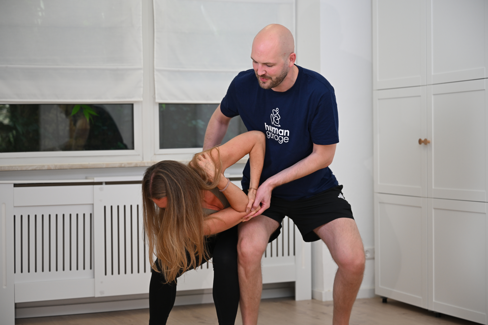
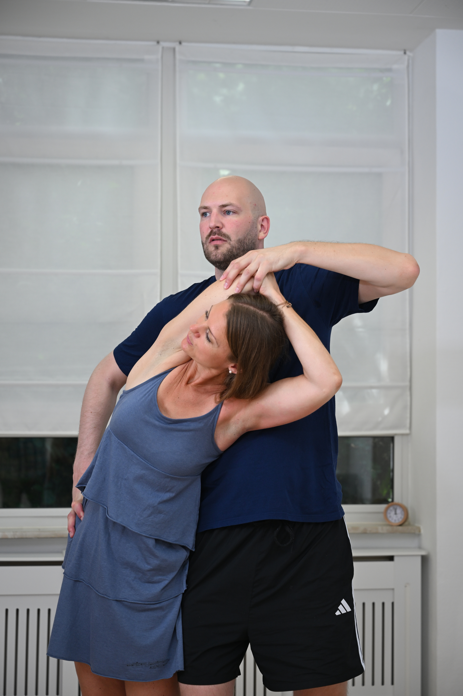
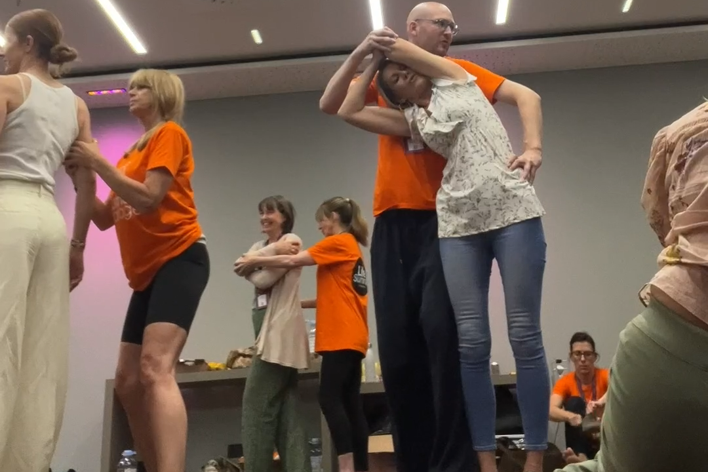
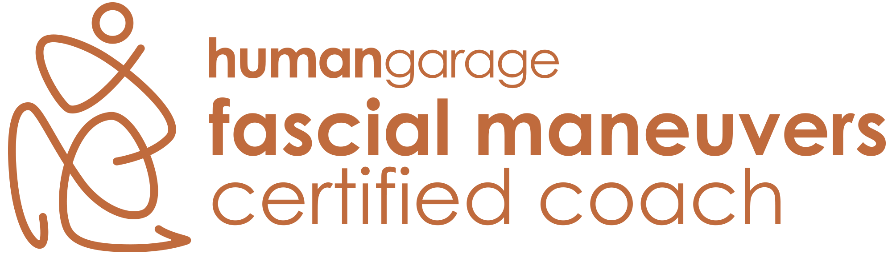

Faszienmanöver · Mannheim
Du kennst die Videos von Human Garage und willst sie richtig lernen? Oder du hast noch nie davon gehört und bist neugierig? Hier bist du richtig.
Faszienmanöver sind einfache, langsame Bewegungen, entwickelt von Human Garage. Sie setzen nicht an einem einzelnen Muskel an, sondern am Bindegewebe, das den ganzen Körper verbindet. Es wird nicht gedehnt und nicht gedrückt. Nach jedem Manöver wird nachgespürt.
Viele beschreiben danach einen ruhigeren Kopf, einen festeren Stand und eine aufrechtere Haltung.

Dein Nervensystem passt deinen Körper ständig an, damit du durch den Tag kommst: am Schreibtisch, im Stress, bei hundert Benachrichtigungen. Spannung ist dabei Schutz und kein Fehler. Was fehlt, ist das Loslassen danach. Dehnen hält deshalb oft nur kurz. Faszienmanöver geben dem Körper Zeit und Sicherheit, die Spannung selbst abzugeben.

In den Bewegungen gibt es ein klares Richtig und Falsch. Beim Spüren nicht. Eine perfekte Bewegung, bei der du nicht bei dir bist, bringt weniger als eine ungenaue, bei der du ganz da bist. In der Gruppe korrigiere ich die Bewegung und lasse dir das Spüren.

Für Menschen, die verspannt sind, schlecht abschalten oder einfach neugierig sind. Vorerfahrung ist nicht nötig. Viele Übungen gehen im Stehen.
Ich bin Maximilian, einer der ersten von Human Garage zertifizierten Faszienmanöver-Coaches in Deutschland. Neuverbinden ist mein eigenes Angebot und kein Teil von Human Garage.

Faszienmanöver ersetzen keine ärztliche Behandlung oder Physiotherapie.